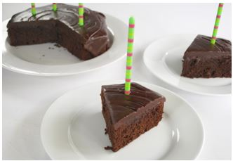

Decadent Brownie Cake
Yield: one cake layer

INGREDIENTS:
- 2 cups Pamela's Chocolate Brownie Mix (we buy the 25# bags off Amazon without the chocolate chunks added. In a pinch you can use one 16 oz. bag from the store)
- 2 eggs, large
- 1/2 cup sunflower oil
- 1/2 tsp baking powder
- 1/2 tsp baking soda
- 3/4 cup coconut milk
DIRECTIONS:
Preheat oven to 350°. Combine all ingredients and mix thoroughly. Pour into greased 8 or 9-inch pan. Bake for 30 to 35 minutes. It will also make 16 cupcakes, baked for 22 minutes. Cake should be firm to the touch. Do not over bake.